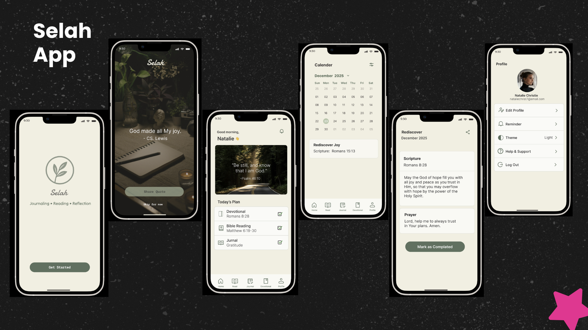
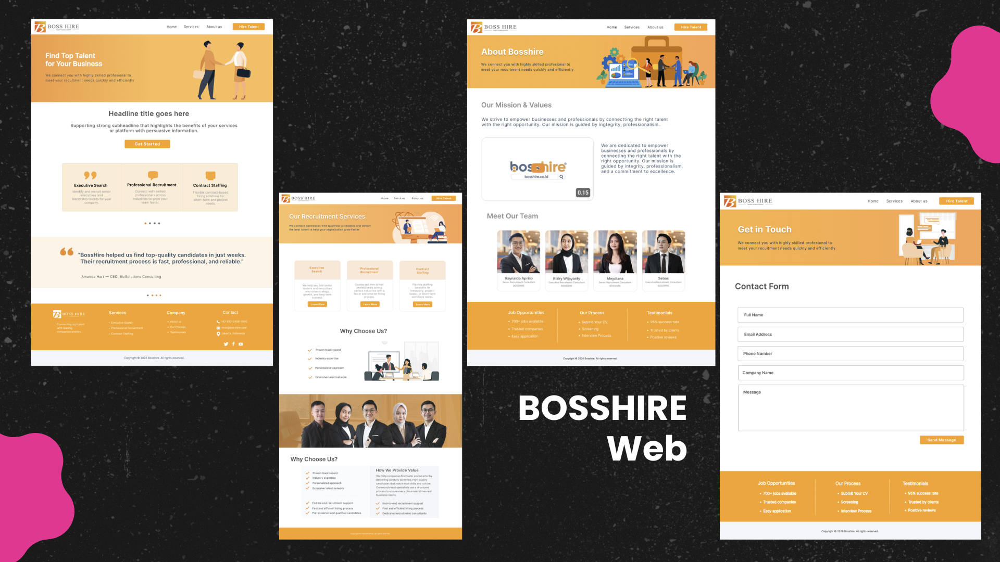
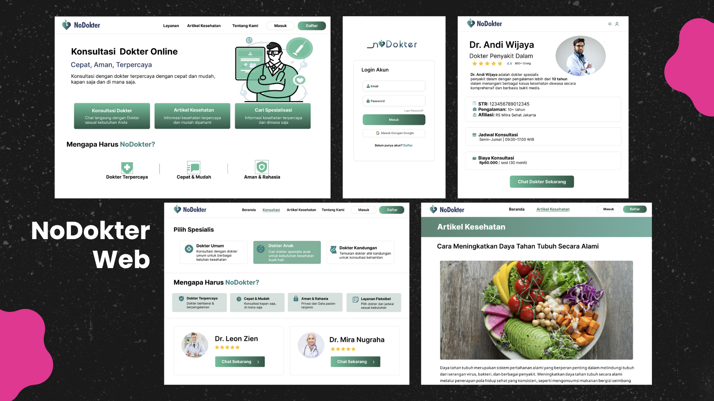
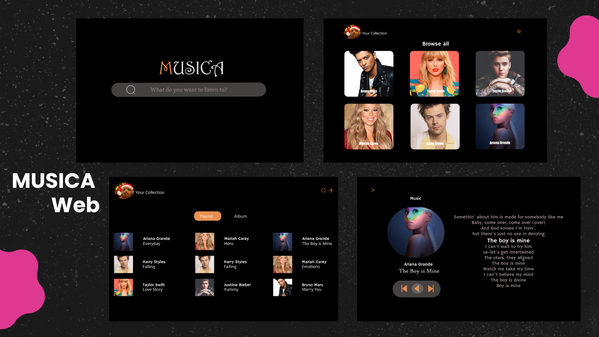
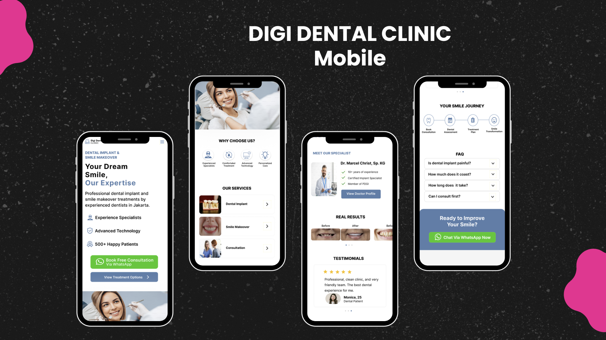

Portofolio Projects
Fullstack Developer & UI/UX Designer
Project Name: MOREEN – Mountain Orientation & Readiness for Exploration and Environmental Navigation
Problem & Goal: Many beginner hikers struggle with preparation, safety, and route planning due to scattered information sources. This project aims to solve that by providing a centralized, user-friendly platform that supports safe and enjoyable hiking experiences.
Description: A cross-platform mobile app designed for beginner hikers, offering trail guidance, route planning, safety information, and booking services — all within an intuitive and accessible interface.
Key Features:
- Hiking guide with beginner-friendly UI
- Online ticket booking for hiking spots
- Emergency contacts and safety information
Prototype:
View Figma PrototypeTools & Technologies: VSC, Flutter (Dart), Laravel (PHP), MySQL (XAMPP), REST API, Figma

Fullstack Web Developer & UI/UX Designer
Project Name: MOREEN Admin & Web Guide System
Problem & Goal: Managing hiking information, ticket bookings, and user data manually can be time-consuming and prone to errors. This project aims to provide an efficient and centralized web-based management system to support the MOREEN hiking platform.
Description: A web-based support system designed to help administrators manage the MOREEN hiking platform effectively. The platform includes tools for managing hiking content, booking schedules, and user roles — all within a user-friendly and responsive interface.
Key Features:
- Admin dashboard with role-based access control
- Hiking content editor (add, edit, delete trails and safety info)
- Online ticket booking and schedule management panel
Tools & Technologies: VSC, Laravel (PHP), MySQL (XAMPP), HTML, CSS, JavaScript, Figma

UI/UX Designer
Project Name: SELAH – Faith & Devotional Mobile App
Problem & Goal: Many Christians struggle to maintain a consistent devotional routine due to busy schedules, distractions, and the lack of a simple, engaging digital platform. This project aims to create a peaceful and intuitive mobile experience that encourages users to build a daily habit of reading the Bible, journaling, and spending time with God.
Description: A mobile devotional application designed to help users strengthen their spiritual journey through daily devotionals, Bible reading, prayer journaling, and habit tracking. The interface emphasizes simplicity, calmness, and accessibility to create a meaningful worship experience for users of all ages.
Key Features:
- Daily devotional with scripture and reflection
- Bible reading tracker and reading plans
- Prayer & gratitude journal
- Daily reminders to build consistent devotional habits
- Calendar view for tracking spiritual progress
- Personal profile and devotional history
Tools & Technologies: Figma, FigJam, Design System, Wireframing, Prototyping, User Research, Usability Testing

UI/UX Design Project
Project Name: BOSSHIRE – Recruitment & Talent Hiring Web Platform
Problem & Goal: Many users struggle to access healthcare services quickly due to unclear navigation and lack of trust in digital platforms. This project aims to design a simple, intuitive, and trustworthy platform for online medical consultation.
User Pain Points:
- Difficulty finding the right doctor
- Unclear service information
- Complex consultation process
Solution: Designed a structured interface with clear navigation, simplified consultation flow, and detailed doctor profiles to improve usability and user trust.
Key Features:
- Clear homepage navigation
- Doctor profile with detailed information
- Specialist selection flow
- Simple login interface
- Health article section
- Clear CTA “Chat Doctor Now”
Prototype:
View Figma PrototypeTools:Figma, FigJam

UI/UX Design Project
Project Name: NoDokter – Online Medical Consultation Platform
Problem & Goal: Many users struggle to access healthcare services quickly due to unclear navigation and lack of trust in digital platforms. This project aims to design a simple, intuitive, and trustworthy platform for online medical consultation.
User Pain Points:
- Difficulty finding the right doctor
- Unclear service information
- Complex consultation process
Solution: Designed a structured interface with clear navigation, simplified consultation flow, and detailed doctor profiles to improve usability and user trust.
Key Features:
- Clear homepage navigation
- Doctor profile with detailed information
- Specialist selection flow
- Simple login interface
- Health article section
- Clear CTA “Chat Doctor Now”
Prototype:
View Figma PrototypeTools:Figma, FigJam

UI/UX Design Project
Project Name: MUSICA – Music Streaming Web Platform
Problem & Goal: Many users struggle with cluttered interfaces and complex navigation on music platforms. This project aims to design a simple, intuitive, and visually appealing interface that makes discovering and listening to music effortless and enjoyable.
Description: A web-based music streaming platform focused on delivering a seamless and engaging user experience. The design emphasizes simplicity, intuitive navigation, and aesthetic appeal to make discovering and listening to music enjoyable and effortless.
Key Features:
- Clean and minimalist search bar for quick access to songs and artists.
- Visual catalog of artists with an intuitive browsing experience.
- Organized collection view for playlists and albums.
- User-friendly player interface with lyrics display and easy playback controls.
Tools & Technologies: Figma, FigJam

UI/UX Design Project
Project Name: Digi Dental Clinic – Mobile Dental Consultation & Treatment Platform
Problem & Goal: Many patients find it difficult to access reliable dental treatment information and book consultations efficiently. Limited information about procedures, specialists, and treatment processes often creates uncertainty and reduces trust. This project aims to design a user-friendly mobile platform that provides clear dental service information, builds patient confidence, and simplifies the consultation journey.
User Pain Points:
- Difficulty finding trusted dental specialists
- Lack of clear information about dental treatments
- Uncertainty regarding treatment procedures and outcomes
- Complicated consultation and appointment process
Solution: Designed a clean and intuitive mobile interface that highlights dental services, specialist profiles, treatment information, and patient testimonials. The platform simplifies the consultation process and provides transparent information to increase user trust and engagement.
Key Features:
- Clear homepage with service overview
- Detailed dental specialist profiles
- Dental treatment and service catalog
- Smile transformation journey visualization
- Before & after treatment gallery
- Patient testimonials and reviews
- FAQ section for common concerns
- WhatsApp consultation integration
- Strong CTA “Book Free Consultation” and “Chat via WhatsApp Now”

Skills
Tools
- Figma
- Miro
- FigJam
- Notion
- Maze
- Canva
- CapCut
Creative Skills
- Design Thinking
- Wireframing & Prototyping
- Interaction Design
- Information Architecture
- User Research & Usability Testing
- Accessibility
- Technical Documentation
- Research & Problem Solving
Technology
- HTML & CSS
- JavaScript
Additional Skills
- Camera Person/Videographer
- Video Editing
Languages
- Indonesia (Native)
- English (Intermediate)
Organizational Experience
Secretary – Mapala UTY (2022–2023)
- Drafted and managed organizational documents including activity proposals, official correspondence, and accountability reports for campus submission.
- Organized meeting agendas, recorded minutes, and maintained proper documentation of all internal and external activities.
- Supported coordination and logistics for nature-related activities such as hiking, basic training, and environmental programs.
Camera Person/Videography – KA Media Ministry (2023–2024)
- Captured and managed visual documentation for worship services and spiritual events, both onsite and online.
- Contributed to the production of creative video content for social media and weekly services, ensuring high-quality visuals and composition.
- Collaborated with the production team in preparing camera equipment, lighting, and audio, and assisted in basic editing processes.
Get in touch
For business inquiry please send email to